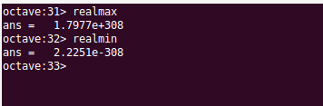
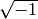
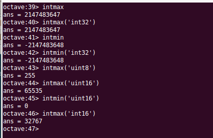

Tipos de datos¶
Octave incluye un buen número de tipos de datos básicos predefinidos, entre los que podemos mencionar los escalares enteros, reales y complejos, los valores lógicos verdadero-falso y las cadenas de caracteres.
El tipo double¶
El tipo de datos por defecto en Octave es el tipo double, esto es, cuando tecleamos un número en la consola, Octave lo interpretará como un número double. Los números double son numeros en coma flotante.
La palabra double se refiere a double precision, en contraposición a la single precision de los números de tipo single que se verán más adelante.
Octave reconocerá un número como double al teclearlo con o sin punto decimal. También se reconocen las notaciones denominadas científicas, que se teclean finalizando el número en la letra ‘e‘ y la potencia de diez deseada precedida del signo menos si ha lugar.
102
102.0
1.02e2
1020e-1
Para convertir otro tipo de dato numérico a double, o simplemente para crear un double de valor determinado se puede utilizar la función double(x), que devuelve un número double de valor x.
Octave proporciona dos constantes que nos permiten conocer los valores máximo y mínimo que puede tener un número double, se trata de las constantes realmax y realmin.
{kind=link}
Números complejos¶
Octave opera con números complejos. Para teclear un número complejo se escribira la parte real, el signo ‘+‘ y la parte imaginaria seguida sin espacios por la letra ‘i‘. Se puede utilizar la letra ‘i‘ en minúscula o mayúscula y también la letra ‘j‘, mayúscula o minúscula. Octave interpreta en todos los casos que se refiere a . Veamos algún ejemplo:
1 + 0i
1-2I
1 + 3.0e-2j
1.0 + 2.0J
La función complex() nos devuelve un número complejo construido con la parte real e imaginaria pasadas como argumento. Ejemplos de utilización de la función complex():
complex(2); % ans=2+0i Si solo se pasa un parámetro se toma como la parte real
complex(2,3); % ans=2+3i Si se pasan dos parámetros son la parte real y la imaginaria
Entre dos números complejos se pueden utilizar las operaciones suma, resta, producto y división:
w = 1 + i; % Nota: el punto y coma final indica a Octave que no imprima el resultado
z = 2 + 2i;
c1 = w+z % El resultado será: c1=3 + 3i
c2 = w-z % El resultado será: c2=-1 - 1i
c3 = w*z % El resultado será: c3=0 + 4i
c4 = w+z % El resultado será: c4=0.50000
También hay algunas funciones predefinidas para operar con números complejos. Si z es un número complejo, podemos utilizar las siguientes funciones:
- real(z) Nos devolverá la parte real del complejo z
- imag(z) Nos devolverá la parte imaginaria
- conj(z) Nos devolverá el número complejo conjugado de z
- abs(z) Nos devolverá el módulo de z
- angle(z) Nos devolverá el argumento del complejo z (en radianes)
Números naturales y números enteros¶
Octave ofrece varios tipos de datos para trabajar con números enteros, integer (int), y con números naturales, unsigned integer (uint).
Cuando se utiliza un solo byte para el almacenamiento, se tienen los tipo de datos int8 y uint8*, según se refiera a enteros positivos y negativos o a enteros solo positivos. En el primer caso los valores serán entre -128 y 127. En el caso de uint8 los valores podrán estar comprendidos entre 0 y 255.
Para definir un número entero de un byte hay que utilizar las funciones int8() o uint8(), como en el siguiente ejemplo:
n1 = int8(-100)
% El resultado será: n1=-100
n2 = uint8(25)
% El resultado será: n2=25
De manera análoga al caso de los enteros de un byte de almacenamiento, Octave ofrece variables y funciones de creación para variables enteras, con o sin signo, de 2 bytes, 4 bytes y 8 bytes. El listado completo de tipos de datos enteros y sus correspondientes funciones de creación es:
- int8, int8()
- int16, int16()
- int32, int32()
- int64, int64()
- uint8, uint8()
- uint16, uint16()
- uint32, uint32()
- uint64, uint64()
Podemos conocer los valores máximo o mínimo de cualquiera de los tipos de datos anteriores a través de las funciones intmax() e intmin(). Cuando se invocan las funciones sin argumentos nos devuelven los valores correspondientes al tipo int32. Cuando se les pasa como argumento una cadena de texto con el nombre del tipo de dato, nos devolverán el valor máximo o mínimo del tipo de datos solicitado. Por ejemplo:
{kind=link}
Warning
Los tipos de datos enteros, a excepción de los tipos de 8 bytes, admiten las operaciones suma, resta, producto, división y potenciación, obteniendo como resultado enteros del mismo tipo que los operados. Hay que tener cuidado con el tipo de datos del resultado cuando aplicamos estas operaciones a datos de distinto tipo.
Valores logical¶
Un valor de tipo logical solo puede tener dos valores: verdadero (true) o falso (false). Octave nos presentará un ‘0‘ para el valor false y un ‘1‘ para el valor true.
Para crear una variable de tipo logical se utiliza la función logical(), que recibe un número como argumento. Si el número que se pasa como argumento es 0, la variable lógica creada tendrá el valor false, cero. Si el numero que se pasa como argumento es distinto de cero, la variable logical creada tendrá el valor true, uno.
bool1 = logical(0)
% El resultado será: bool1 = 0
bool2 = logical(1)
% El resultado será: bool2 = 1
bool3 = logical(-2)
% El resultado será: bool3 = 1
bool4 = logical(2500)
% El resultado será: bool4 = 1